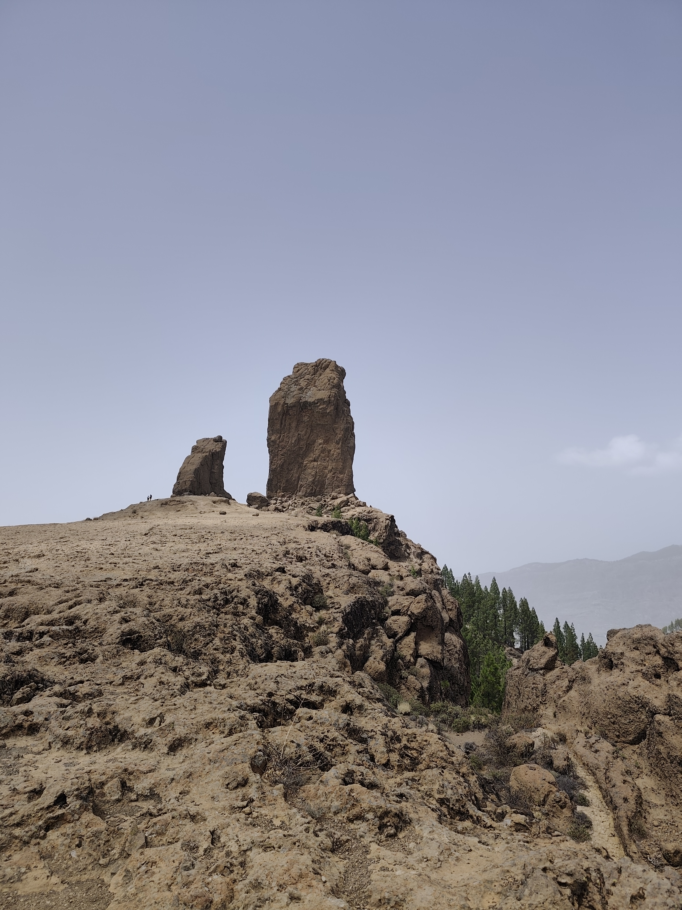

La mayor variedad de paisajes por km² de España. Dunas de Maspalomas, cumbres de 1.949 m y el mejor buceo urbano en el Cabrón.

Usamos cookies propias y de terceros (Google Translate) para mejorar tu experiencia. Puedes aceptar todas, rechazar las no esenciales o leer más en nuestra Política de Cookies y Política de Privacidad.